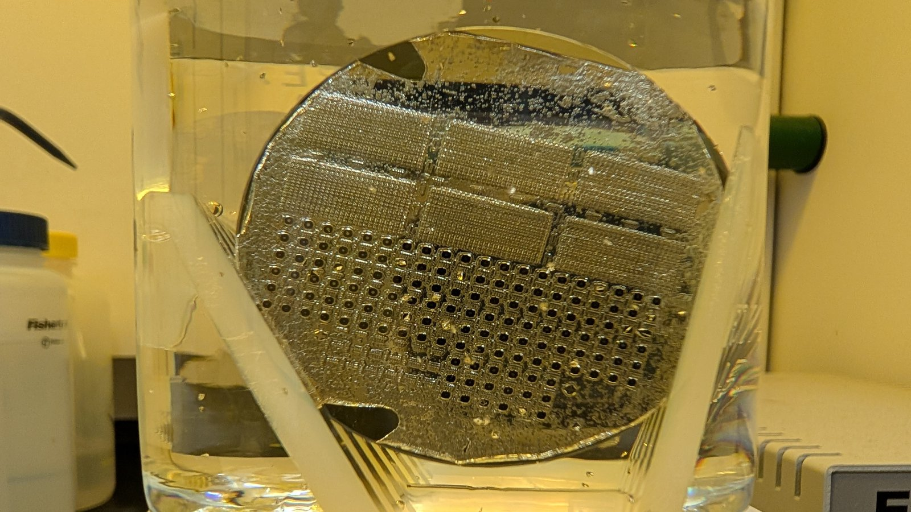
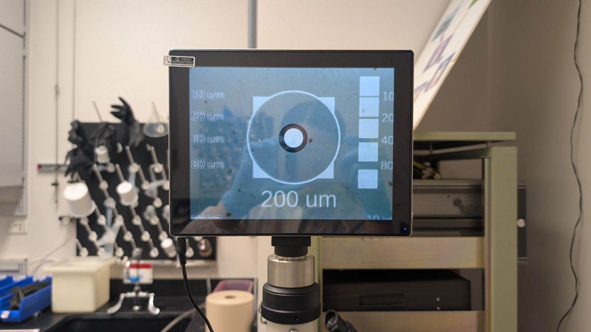
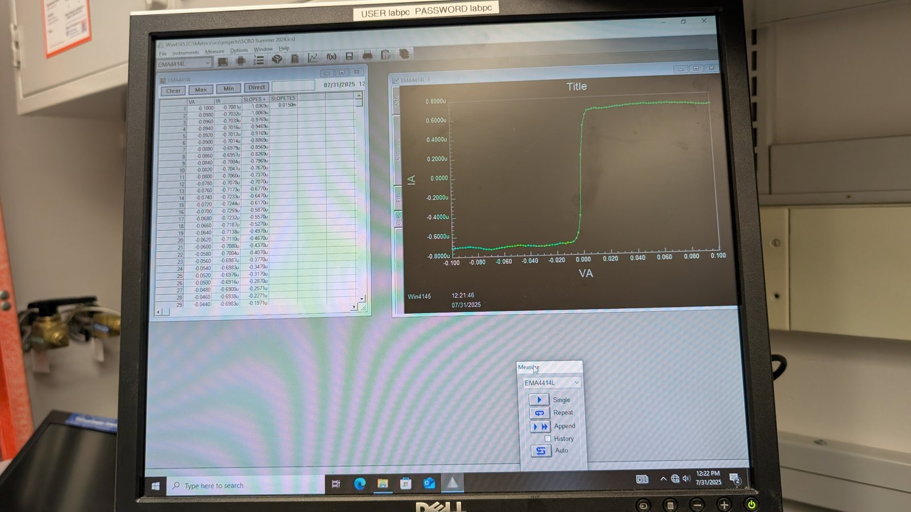
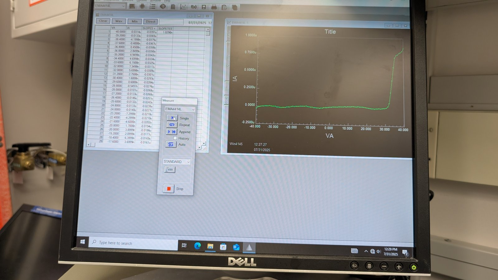

JUL 31, 2025
Summer Processing Lab: Week 8 (7/28 & 7/31)
This week marks the completion of the Summer Processing lab. We use MLO-07 Stripper to remove the excess deposited aluminum across the wafers, preparing them for Annealing.


We then bake the wafers at 550C for 5 minutes to improve Ohmic Junction behavior. Reactions between the Aluminum and Silicon Oxide along the junction boundary form elemental Silicon and Aluminum Oxide, via the following reaction: 4Al + 3SiO2 -> 2Al2O3 + 3Si. The following testing was then conducted to analyze the resulting junction behavior.

